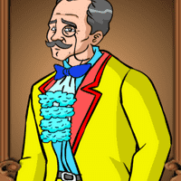

|
Juan Crisóstomo Ibarra y Magsalin (Ibarra) |
- Crisóstomo Ibarra was raised in San Diego by his father, Don Rafael Ibarra.
- He came back to the Philippines after studying in Europe for seven years.
|
|
María Clara |
- She is the daughter of Kapitan Tiago and Doña Pia Alba.
- María Clara and Ibarra had an arranged marriage.
- She was raised by Tiya Isabel.
|
|
Kapitan Tiago |
- The man who is María Clara's known father but not the biological father.
- Kapitan Tiago’s full name is Don Santiago de los Santos.
|
|
Padre Dámaso |
- He is María Clara's biological father.
- He is both the antagonist and the Franciscan priest.
- Padre Dámaso’s full name is Dámaso Verdolagas.
|
 |
Elías |
- He is Ibarra's mysterious friend and a skilled boater who is also a fugitive.
- Saturnino accused his grandfather of setting fire to a warehouse and
turning Elías into the wanted criminal.
|
|
Padre Salví |
- A younger Franciscan priest who takes over Padre Dámaso's responsibilities
as San Diego's priest curate.
- He poses as a threat since he exploits his position as a religious leader for
both vengeance and political power.
- His role plays an important part in the novel through his plot to
undermine Ibarra.
|
 |
Don Rafael Ibarra |
- He is referred to as Crisóstomo Ibarra's father.
- Before Don Rafael’s name could be cleared, he passed away while he
was in prison.
- He was buried in a Catholic cemetery in San Diego.
- Padre Dámaso hired a gravedigger to have Don Rafael’s burial at
the Chinese cemetery due to his status as a heretic.
|
 |
Sisa |
- The mother of Crispín and Basilio who went insane after losing her sons.
- She is poor and married to Pedro, an abusive drunk.
- She continues to walk the streets calling out for her sons while wearing
torn clothing.
|
|
Don Anastacio |
- An elderly man who studied philosophy and is seen as crazy by the majority
of the community.
- He gives advice to Ibarra since he respects him and also helped Don Rafael
before Ibarra.
|
 |
Basilio |
- He is the elder son of Sisa and also Crispín's older brother.
- He is a gravedigger, like his younger brother Crispín.
|
 |
Crispín |
- The younger son of Sisa and younger brother of Basilio.
- He was wrongly accused of stealing money, and the soldiers punished him until
he passed away.
|
|
Doña Victorina |
- The wife of Don Tiburcio who loves makeup.
- A woman who doesn't consider herself to be pure Filipina because she is ashamed.
- She identifies as Spanish and speaks Spanish instead because she views the
Philippines poorly.
|
|  |
Don Tiburcio |
- The Spanish husband of Doña Victorina who is obedient to her.
- His wife encouraged him to pretend and to pose as a doctor.
- Don Tiburcio's full name is Tiburcio de Espadaña.
|
 |
Doña Consolación |
- The wife of the chief of the Guardia Civil, Alperes.
- "The muse of the Civil Guard" is how they refer to her.
- She is another woman who identifies as Spanish and acts
as though she does not understand or speak the language.
- She is also known for abusing Sisa.
|
 |
Alperes |
- He is the chief of the Guardia Civil and Doña Consolación's husband.
- He is the most ferocious enemy of the priests in San Diego.
|
 |
Tiya Isabel |
- One of Kapitan Tiago's cousins who took care and raised María Clara
after Doña Pía Alba's death after giving childbirth to her.
|